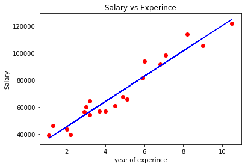
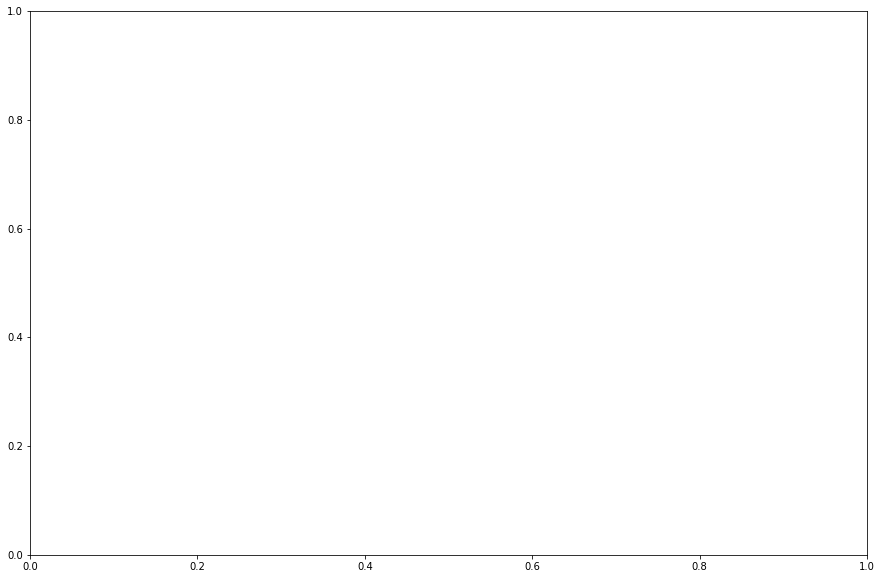
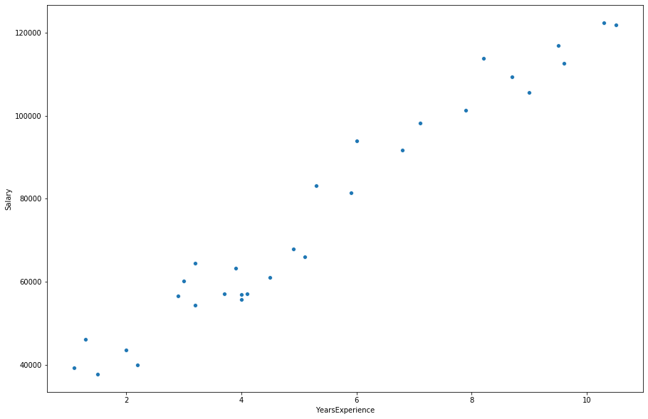

Python 3.7.4 (default, Aug 9 2019, 18:34:13) [MSC v.1915 64 bit (AMD64)]
Type "copyright", "credits" or "license" for more information.
IPython 7.8.0 -- An enhanced Interactive Python.
In [1]: import numpy as np
...: import pandas as pd
...: import matplotlib.pyplot as plt
In [2]: dataset = pd.read_csv("Salary_Data.csv")
In [3]: X = dataset.iloc[:, :-1].values
...: Y = dataset.iloc[:, 1].values
In [4]: X
Out[4]:
array([[ 1.1],
[ 1.3],
[ 1.5],
[ 2. ],
[ 2.2],
[ 2.9],
[ 3. ],
[ 3.2],
[ 3.2],
[ 3.7],
[ 3.9],
[ 4. ],
[ 4. ],
[ 4.1],
[ 4.5],
[ 4.9],
[ 5.1],
[ 5.3],
[ 5.9],
[ 6. ],
[ 6.8],
[ 7.1],
[ 7.9],
[ 8.2],
[ 8.7],
[ 9. ],
[ 9.5],
[ 9.6],
[10.3],
[10.5]])
In [5]: Y
Out[5]:
array([ 39343., 46205., 37731., 43525., 39891., 56642., 60150.,
54445., 64445., 57189., 63218., 55794., 56957., 57081.,
61111., 67938., 66029., 83088., 81363., 93940., 91738.,
98273., 101302., 113812., 109431., 105582., 116969., 112635.,
122391., 121872.])
In [6]: from sklearn.model_selection import train_test_split
...: X_train,X_test,Y_train,Y_test = train_test_split(X,Y,test_size =1/3,random_state = 0)
In [7]: X_train
Out[7]:
array([[ 2.9],
[ 5.1],
[ 3.2],
[ 4.5],
[ 8.2],
[ 6.8],
[ 1.3],
[10.5],
[ 3. ],
[ 2.2],
[ 5.9],
[ 6. ],
[ 3.7],
[ 3.2],
[ 9. ],
[ 2. ],
[ 1.1],
[ 7.1],
[ 4.9],
[ 4. ]])
In [8]: X_test
Out[8]:
array([[ 1.5],
[10.3],
[ 4.1],
[ 3.9],
[ 9.5],
[ 8.7],
[ 9.6],
[ 4. ],
[ 5.3],
[ 7.9]])
In [9]: from sklearn.linear_model import LinearRegression
...: regressor = LinearRegression()
...: regressor.fit(X_train,Y_train)
...: y_pred = regressor.predict(X_test)
In [10]: y_pred
Out[10]:
array([ 40835.10590871, 123079.39940819, 65134.55626083, 63265.36777221,
115602.64545369, 108125.8914992 , 116537.23969801, 64199.96201652,
76349.68719258, 100649.1375447 ])
In [11]: plt.scatter(X_train,Y_train,color='red')
...: plt.plot(X_train,regressor.predict(X_train),color='blue')
...: plt.title('Salary vs Experince')
...: plt.xlabel('year of experince')
...: plt.ylabel('Salary')
...: plt.show()

In [12]: import seaborn as sn
In [13]: fig,ax1 = plt.subplots(figsize=(15,10))

In [14]: sn.scatterplot(x='Salary' y= 'YearExperince',data = dataset,ax=ax1)
File "<ipython-input-14-762f39f0d4fe>", line 1
sn.scatterplot(x='Salary' y= 'YearExperince',data = dataset,ax=ax1)
^
SyntaxError: invalid syntax
In [15]:
In [15]: sn.scatterplot(x='Salary',y= 'YearExperince',data = dataset,ax=ax1)
Traceback (most recent call last):
File "<ipython-input-15-1fad72ae6dc8>", line 1, in <module>
sn.scatterplot(x='Salary',y= 'YearExperince',data = dataset,ax=ax1)
File "C:\Users\user\Anaconda3\lib\site-packages\seaborn\relational.py", line 1335, in scatterplot
alpha=alpha, x_jitter=x_jitter, y_jitter=y_jitter, legend=legend,
File "C:\Users\user\Anaconda3\lib\site-packages\seaborn\relational.py", line 852, in __init__
x, y, hue, size, style, units, data
File "C:\Users\user\Anaconda3\lib\site-packages\seaborn\relational.py", line 142, in establish_variables
raise ValueError(err)
ValueError: Could not interpret input 'YearExperince'
In [16]:
In [16]: sn.scatterplot(x='Salary',y= 'YearsExperince',data = dataset,ax=ax1)
Traceback (most recent call last):
File "<ipython-input-16-1741ab815a64>", line 1, in <module>
sn.scatterplot(x='Salary',y= 'YearsExperince',data = dataset,ax=ax1)
File "C:\Users\user\Anaconda3\lib\site-packages\seaborn\relational.py", line 1335, in scatterplot
alpha=alpha, x_jitter=x_jitter, y_jitter=y_jitter, legend=legend,
File "C:\Users\user\Anaconda3\lib\site-packages\seaborn\relational.py", line 852, in __init__
x, y, hue, size, style, units, data
File "C:\Users\user\Anaconda3\lib\site-packages\seaborn\relational.py", line 142, in establish_variables
raise ValueError(err)
ValueError: Could not interpret input 'YearsExperince'
In [17]:
In [17]: sn.scatterplot(x='Salary',y= 'YearsExperience',data = dataset,ax=ax1)
Out[17]: <matplotlib.axes._subplots.AxesSubplot at 0x254350c0f48>
In [18]: sn.show(fig)
Traceback (most recent call last):
File "<ipython-input-18-6d2ce54422bd>", line 1, in <module>
sn.show(fig)
AttributeError: module 'seaborn' has no attribute 'show'
In [19]:
In [19]: plt.show(fig)
In [19]:
In [20]: import seaborn as sn
...: fig,ax1 = plt.subplots(figsize=(15,10))
...: sn.scatterplot(x='YearsExperience',y= 'Salary',data = dataset,ax=ax1)
...: plt.show(fig)

In [21]: